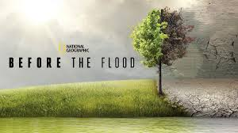

Actions that Change the World
Hello, Welcome to this page, here, you will see some subjects that actually impact our daily lives and that will transform the future we live in, for that, I have separated each part of this subject into topics that are very important.
As you can see, there is a circle at the top of this page that represents the 4 topics that will be discussed here, each of these topics represent specific topics that are:
Sustainability
Education
Collectivity
Technology
And also in the upper right corner you can change the language or theme for greater reading accessibility.
Anyway, check out the content below.
Sustainability

What we can clearly mention here are sustainable actions that, in fact, transform not only the world, but who we are.
Throwing garbage in the right place, taking care of trees and plants, and even planting them, reflects in a much better environment for human beings to live together.
It's clear that actions that transform the world can be sustainable, this is what we mostly need at the moment, in many places in the world we see pollution, environmental destruction, fires and devastation, and sustainability is the key to having a potentially better future. You are also part of this, in fact, we all are, nature benefits us with its natural resources, why can't we contribute to it too? Right?
Education

One more of the actions that are very important for our future is education, because it's education that models what we plan to be in the future, and obviously, boost our productivity to enter the world of work.
But it's not just to work that we go to school or any other educational institution, we also learn to live with the world, with its history, with its mechanisms, which is why teaching someone something can often be something transformative , because you are transmitting information to someone who will probably use it at some point in their lives.
Education also covers very important topics to encourage the practice of innovative activities, which cover topics also mentioned here, like technology and sustainability.
Collectivity

The world wouldn't be what it is today without us acting together, yes, another topic that deals with the relevance of transforming our world is the community, because several people investing in a project or a good action is essential to generate changes in a big scale.
This is a very important subject to deal with, because nowadays the world is becoming more and more individualistic, where people seek less and less to act or participate in groups and communities, this brings some harm to society in general, such as inequalities, lack of acceptance , low self-esteem, among other psychological and social problems.
Since the primordial times of the human being, we have only evolved collectively, and the collective offers us a wide variety of things that we cannot do alone. And that's why we can apply this to our daily lives, we can't transform the world just by ourselves, but we need the cooperation and help of everyone as one, helping nature, preserving raw materials and looking for new solutions to problems that we face every day.
Wow, all these texts get you tired of reading, don't they? Well, I will recommend some movies and documentaries below if you are really interested in these subjects:

Brave Blue World (2020)
Before the Flood (2016)

Minimalism: A Documentary About the Important Things (2015)
Okay, these are the recommendations, they may be few but it's a start, you can find many more movies, series, documentaries and books that talk about the topics on this page on the internet. Let's move on to the next topic:
Technology

Technology is our tool to make changes happen. The development and evolution of our knowledge provides a greater opportunity for us to change the world and our future.
That's why technology is what will transform our world, because with technology we can develop new ways to preserve natural resources and our personal lives, all in a time as necessary as now.
It is noteworthy that all subjects here are extremely important, the current generation is and will undergo severe changes in the future, and especially in the environment. Like the glaciers in the Arctic regions that melt day after day, the extreme heat that occurs in the European region, deforestation, fires, and other discoveries such as the advancement of artificial intelligence, the metaverse, virtual reality, quantum processors, cars and smart electronics, and much more to come, so technology is what will continue to innovate our lives.
And these are the real actions that will transform the world.
But none of this would be important without you, workers who spend day after day striving for a better world, professors who invest in the future and in the lives of students, students who dedicate themselves to being future entrepreneurs or professionals, and many other people, who make up a society in a world that is constantly changing.
Thank you for viewing this project that I spent days dedicating myself to, it is a pleasure to be part of a project that deals with such an incredible topic for our lives. Thanks.

This work is licensed under a Creative Commons Attribution 4.0 International License.
This site was developed by @IzaacCoding36. All rights reserved.
Curitiba, Paraná, Brazil. 2024.